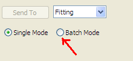
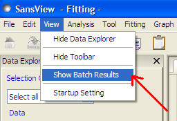
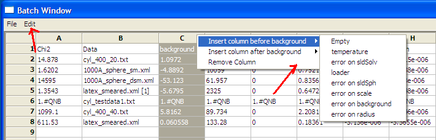
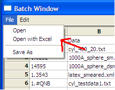
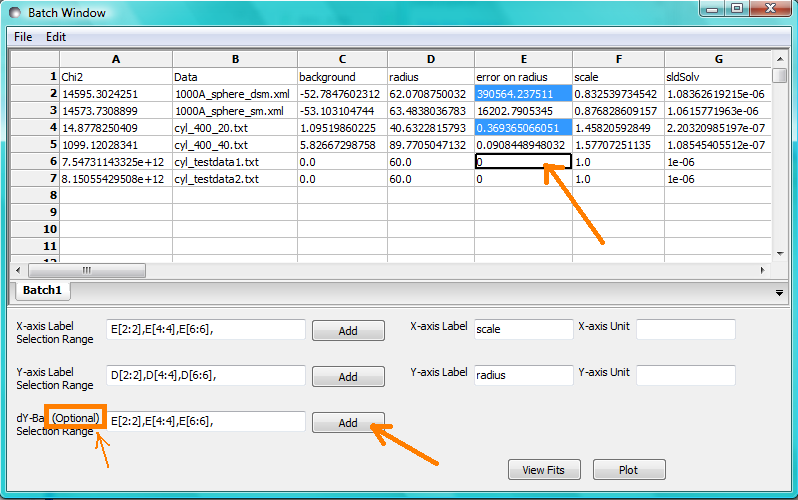
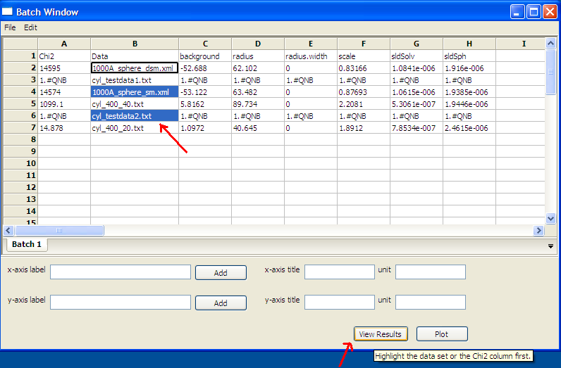

Create Batch Page by selecting Batch radio button on
Data Explorer(see figure below).

Figure 1: MenuBar
Load Data to Data Explorer.Activate the Fitting application
either by selecting "Fitting" from combo box of the Data Explorer window or the menubar item "Applications".
Send selected data to fit (see Load Data help).
Modify the model parameters as need (see single fit help).
Select a new data from the Data combo box to see analyse
theory plot. Then click on fit button.
Batch Window provides an easy way to view fit results, plot data, theory, and residuals after a batch fit is completed.
Batch window will be automatically shown after a batch fit is finished.
Once closed,
it can be opened anytime from the "View" menubar item (see Figure 2).

Figure 2: Edit Menu
Once a batch fit is completed all fitted and fixed model parameters are displayed to the current sheet of
the batch window, except errors on parameters. To view errors on fitted parameters or data parameters,
click on a given column then under Edit menubar item and insert the desired parameter by selected
a menu item with the appropriated label. Empty column can be inserted in the same way.
Column value can be customized by editing an existing empty column.
To Remove column from the grid, selected it, click on edit menu, and click on remove menu item.
Any removed column should reinserted when needed.
All above options are also available when right clicking on a given column label
(see Figure 3).
Note: A column always need to be selected in order to remove or insert a column in the grid.

Figure 3: Edit Menu
To save the current page on the batch window, select File menubar item
(see Figure 4), then select Save as
menu item to save it as a .csv file.
Note: The grid doesn't save data, theory, and residuals plots. As a result, the view functionality
will be lost when reloading the saved file.
Warning! To ensure accuracy of saved fit results, It is recommended to save the current grid
before modifying it .
Any csv file can be opened in the grid by selecting Open
under File menu (see Figure 4).
All columns in the file will be displayed but insertion will not available.
Insertion will be available only when at least one column will be
removed from the grid.

Figure 4: MenuBar
To plot a column versus another,
select one column at the time, click on Add button next to text control
of X/Y -axis Selection Range
to plot the value of this column on the X/Y axis.
Repeat the same procedure the next axis.Finally , click on Plot button.
When clicking on Add button, the grid
will automatically fill the axis label, but different labels and units can be
entered in the correct controls before clicking
on the plot button.
X/Y -Axis Selection Range can be edited manually. These text controls
allows the following types of expression:
operation can be +,
-, *,
/, or pow.
1) if the current axis label range is a function of 1 or more columns,
write this type of expression:
constant1 * column_name1
[minimum row index : maximum row index]
operator constant2
* column_name2
[minimum row index : maximum row index]
Example : radius[2 : 5]<
b> - 3 *
scale[2 : 5]
2) if only some value of a given column are need but the range between
the first row and last row used is not continuous,
write
the following expression in the text control:
column_name1
[minimum row index1 : maximum row index1]
,
column_name1
[minimum row index2 : maximum row index2]
Example : radius [2 : 5]
, radius
[10 : 25]
Note: Both text controls ( X and Y -axis Selection Range) need to be filled
with valid entries for plotting to work (see Figure 5).

Figure 5: Plotting
Select 1 or more cell from the same column, click View Results
button to display available curves.
For example selecting cells of Chi2 column, then click on view
button. The plots generates will represent residuals plots.
If you select any cells of Data column, then click on
view button. The plots generates will represent
data and theory model plots (see Figure 6).

Figure 6: View Results